Установка и подключение
Руководство пользователя · Электронные замки Novilock™ Classic Slim
ОБЩИЕ РЕКОМЕНДАЦИИ ПО УСТАНОВКЕ
- Перед установкой проверьте комплектацию. Она долж на соответствовать заявленной в Паспорте изделия.
- Осмотрите устройство перед использованием. Извлеки те из упаковки и проверьте на предмет повреждений, которые могли произойти во время транспортировки.
- При обнаружении каких – либо несоответствий в ком плектации или повреждений, обратитесь к производителю или дистрибьютору для замены устройства.
- В случае неисправности не осуществляйте самостоя тельный ремонт устройства.
- Убедитесь, что габариты и другие параметры двери со ответствуют техническим характеристикам устройства.
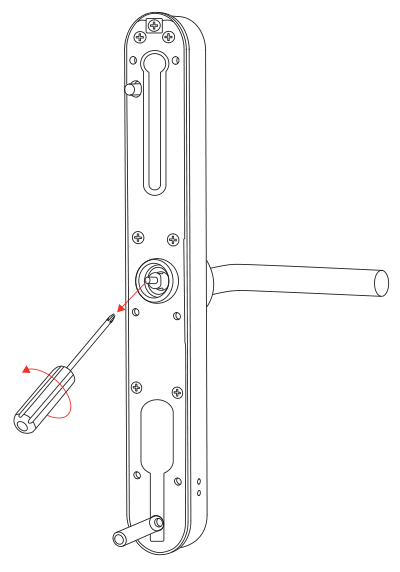
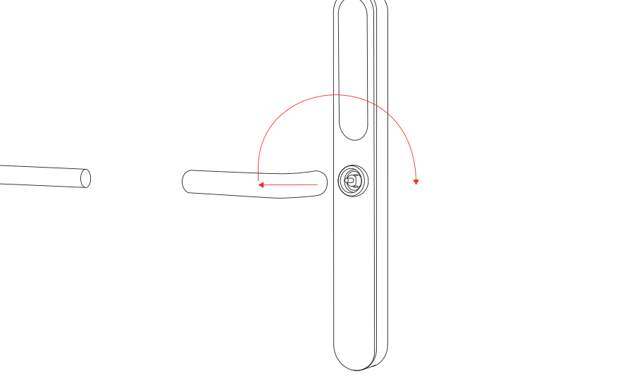
УСТАНОВКА
Если вам необходимо сменить направления ручек: открутите винт в ручке шестигранным ключом, снимите ручку, переверните и установите на место. Закрепите ее винтом.
Обратите внимание
Отрегулируйте ручку в соответствии с направлением, в кото ром открывается дверь.
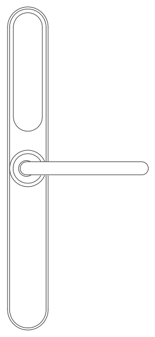
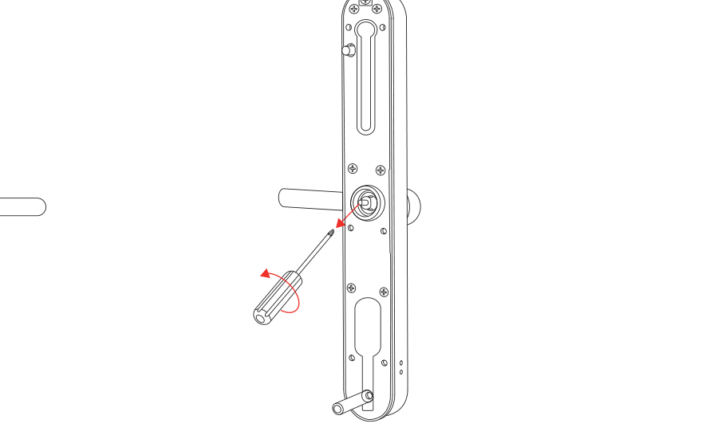
3. Точно также поменяйте направление на внутренней панели.
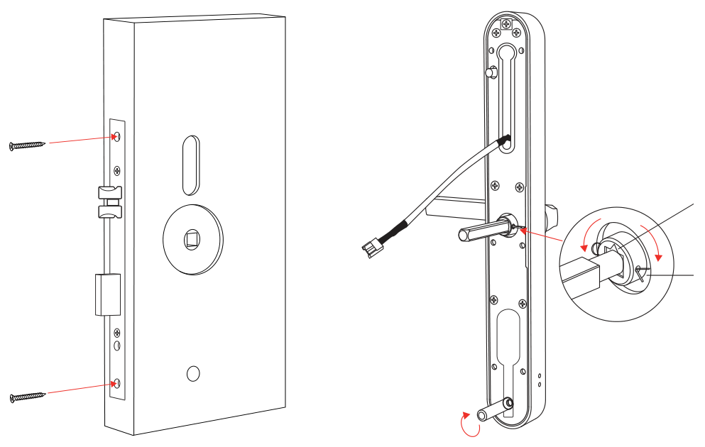
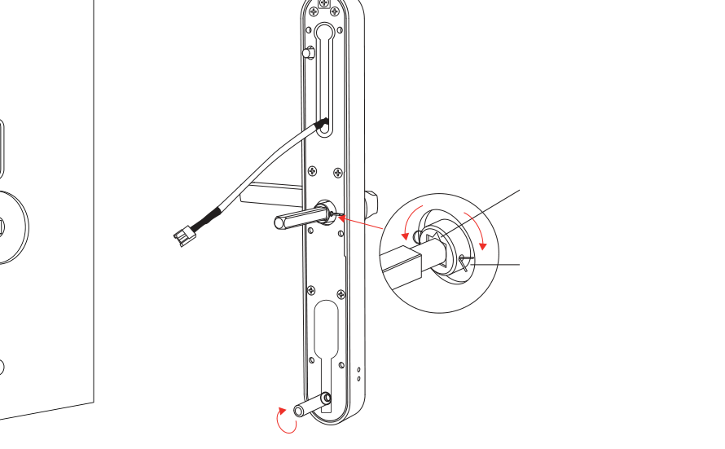
Шаг 1-2
Установите врезной замок в дверь. Если необходимо сменить направление языка, поднимите стопор нажмите на язычок так чтобы он опустился ниже лицевой планки врезного замка и переверните язычок. Вставьте квадратный вал стороной со сквозным отверстием в паз рычага и зафиксируйте положение клипсой.
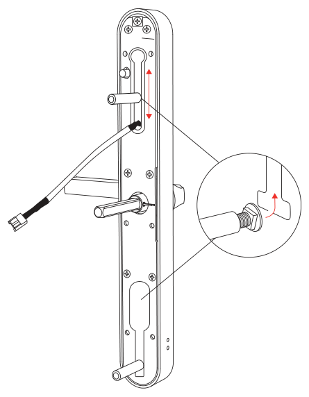
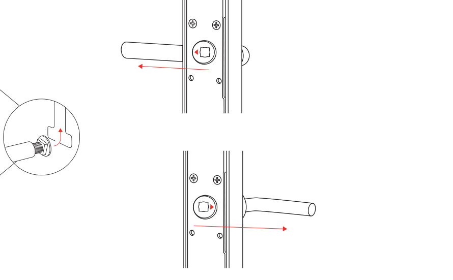
Шаг 3
Установите скользящие винты на внешнюю панель и отрегулируйте их положение по вертикальной оси в зависимости от расположения отверстия сверления. Наденьте уплотнительную резиновую накладку.
Шаг 4
Установите метку на ручке. Метка должна указывать в сторону направления ручки.
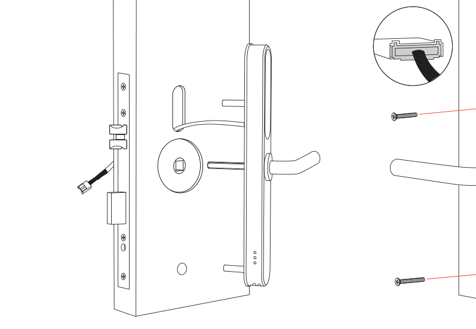
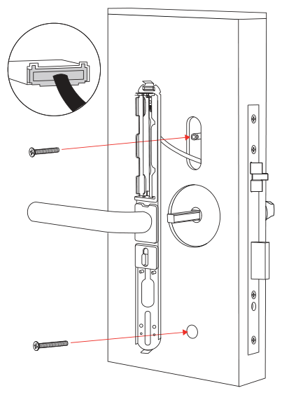
Шаг 5
Протяните коммутационной провод внешней панели во врезную часть, а затем установите саму панель.
Шаг 6
Снимите крышку с внутренней панели, для этого открутите винт внизу панели и снимите крышку. Наденьте уплотнительную резиновую накладку на внутреннюю панель, соедините коммутационные кабеля передней и задней панели и установите панель. Закрепите панели стяжными винтами.
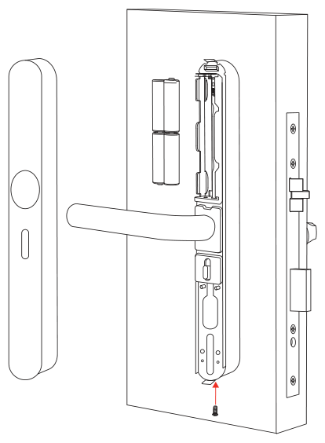
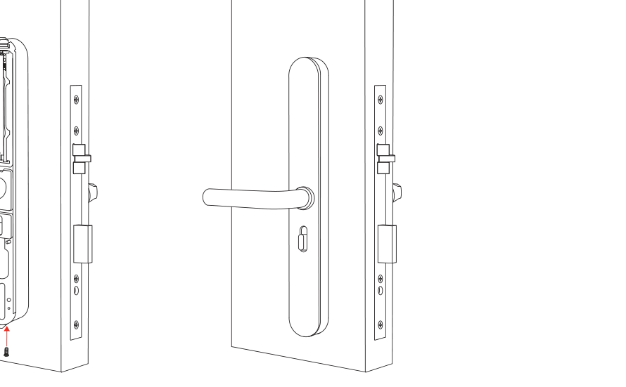
Шаг 7
Установите батарейки и наденьте врушку внутренней панели и закрепите ее винтом снизу.
Обратите внимание
Крышку задней панели лучше пока не закрывать, так как потребу ется кнопка REST для инициализации замка после его установки
Установка программного обеспечения ILMS Novilock Для работы с замками необходимо скачать и установить ПО ILMS Novilock, если ПО к замкам вы не получили вмете с замками обратитесь в Novilock по почте sale@novilock.ru или напишите в телеграмм Novilock.
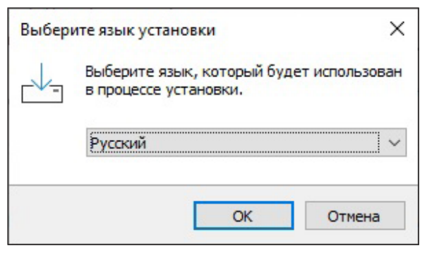
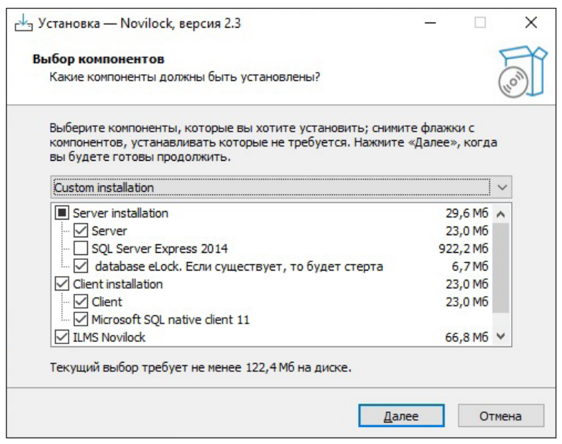
Рекомендуется делать полную установку ПО ILMS Novilock с установкой Microsoft SQL Server 2014, Server и Client. Для установки ПО перегрузите ваш компьютер под учетной записью с правами администратора и запустите предоставленный вам файл setup.exe. Если административных прав хватает, то откроется окно выбора языка (Рис. 15). При необходимость можно сделать выборочную установку установив соответствующие галочки при установке (Рис. 16).
x86 с тактовой частотой 1,0 ГГц, но рекомендуется 64‑разрядная модель x64 с тактовой частотой не менее 1,4 ГГц. Специалисты Microsoft рекомендуют быстродействие 2,0 ГГц. Минимальные требования к памяти SQL Server 2014 также невысоки. Для редакции начального уровня SQL Server 2014 Express требуется не менее 512 Мбайт, хотя для других редакций нужно не менее 1 Гбайт оперативной памяти. Microsoft рекомендует использовать не менее 4 Гбайт оперативной памяти. Требования к пространству на диске зависят от устанавливаемых компонентов. Для SQL Server 2014 необходимо, по крайней мере, 6 Гбайт свободного пространства на диске.
Обратите внимание
Для активации Server потребуется по лучить и активировать лицензию. Базо вая версия ПО ILMS Novilock работает без лицензии. Перед запуском программного обеспе чения подключите энкодер к компьюте ру. Windows автоматически определяет драйвер устройства. Внешний драйвер не требуется. Пароль для пользователя Admin по умолчанию не задан. Для под тверждения входа нажмите OK. Реко мендуем установить пароль после вхо да в систему. Для работы любого из компонентов ПО необходим компьютер под управлением windows не ниже Windows 7. Желатель но использовать 64 разрядную версию. Наиболее требовательный к ресурсам компонент это Microsoft SQL Server 2014. Рекомендации Microsoft выглядят сле дующим образом: Минимальные требования к процес сору – 32‑разрядный процессор типа
Обратите внимание
ПО может использоваться в двух режимах. Локальном и сетевом. В первом случае все компоненты устанавливаются на одном ком пьютере. Во втором на разных и соединяются между собой посред ством локальной сети.
При настройке ПО в локальном режиме вместо Microsoft SQL Server есть возможность использовать базу данных Access. Наше ПО может работать с данной базой данных, но мы крайне не рекомендуем этого делать из- за её ограниченности. В частности, из-за ограничений длинны полей могут возникать ошибки при обработке длинных команд. Так же происходят задержки до 10 секунд при передаче данных клиенту. Мы попытались обойти эти ограничения, но всё же не рекомендуем использовать данный тип базы данных. Лучше использовать Microsoft SQL Server.
Обратите внимание
Ни в коем случае не рекомендуется установка ПО в папку Program Files или Program Files (x86). Если вы всё же решите установить ПО в данные папки, то не забудьте задать права пользователя на изменение и запуск файлов.
После выбора языка откроется вкладка с выбором компонентов для установки. Для работы ПО с БД Access не нужны компоненты, отвечающие за работу с Microsoft SQL Server. Поэтому выберите Server, Client и ILMS, а всё остальное не устанавливайте. Нажимите кнопку Далее и выберите Дополнительные задачи установки.
Обратите внимание
Выбор компонента ILMS обязателен, так как именно в этом компо ненте находиться база данных eLock.mdb с которой работают все компоненты. Для подключения к базе данных используется пароль eLock0618.
Создать значки на рабочем столе Параметр отвечает будут ли созданы значки Server, Client и ILMS на рабочем столе. Если снять, то значки созданы не будут.
Автоматически запускать при старте Windows Параметр отвечает за автоматический старт компонента ПО при загрузке Windows.
Обратите внимание
В дальнейшем невозможно изменить эту настройку без переуста новки компонента или ручной правки реест.
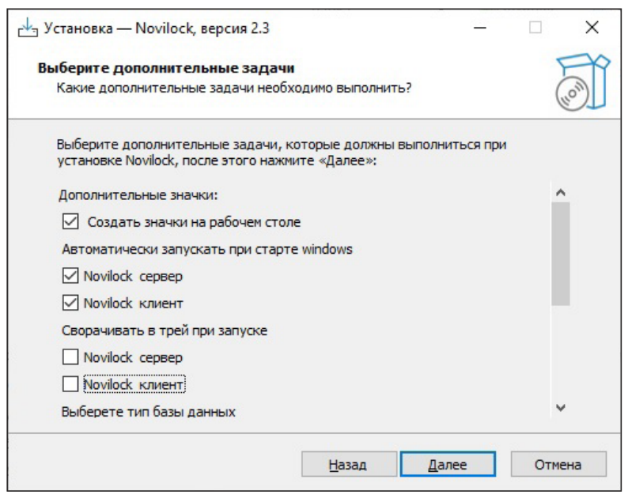
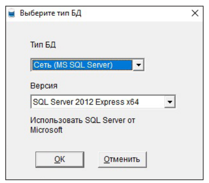
Сворачивать в трей при запуске Если параметр установлен, то программа будет сворачиваться в трей при запуске. В дальнейшем можно изменить в настройках (Рис. 17).
Выберите тип базы данных. Для данного типа установки необходимо выбрать Access (локальное использование на одном компьютере) Этот параметр влияет на настройки по умолчанию для всех трех компонентов (Рис. 18).
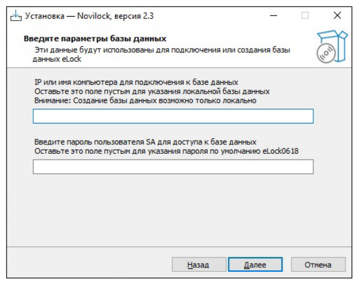
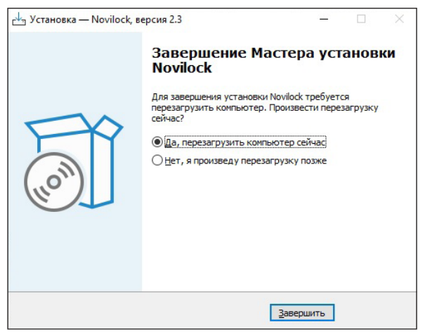
Настроить подключение к этому компьютеру с параметрами по умолчанию. Если данный параметр установлен, то будет произведен сброс настроек соединения и установка их в значения по умолчанию. Соответственно при выборе типа базы данных Access, в качестве файла БД будет указан файл eLock.mdb находящийся в папке ILMS. Примечание: если какой‑либо из компонентов настроен и работает, то возможно и нет необходимости сбрасывать его настройки установкой данного параметра (Рис. 19). После установки необходимых параметров нажмите кнопку Далее, а затем Установить. Будет произведена распаковка компонентов и их настройка для работы с базой данных Access. По завершении будет предложено перезагрузить компьютер (Рис. 20).
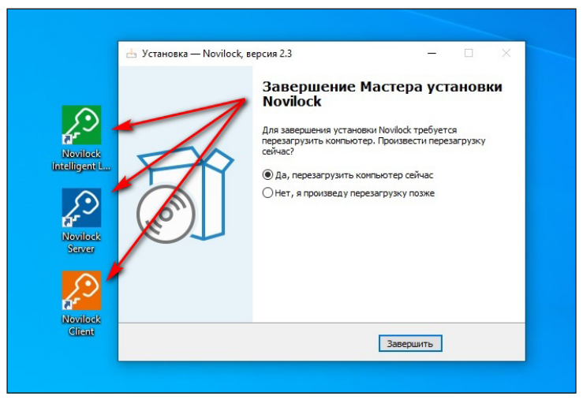
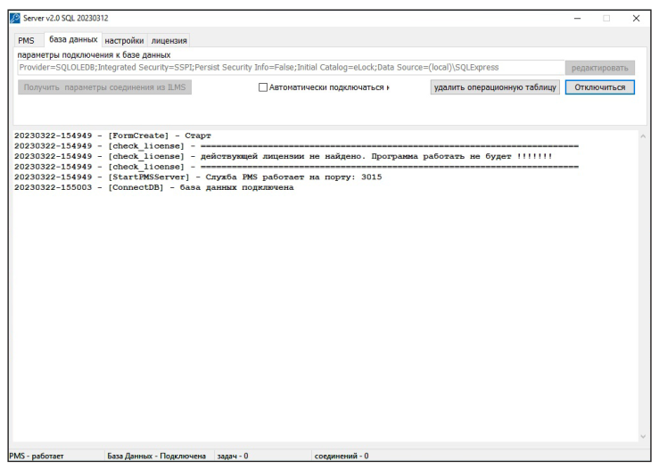
Если все было сделано правильно, то после перезагрузки должны будут автоматически запуститься Клиент и Сервер (если была указана функция автозапуска) (Рис. 21). В логах должны быть записи об успешном подключении к БД и создании операционных таблиц (Рис. 22). Теперь необходимо запустить ILMS, настроить номерной фонд, проверить работу с энкодером и настроить PMS для взаимодействия компонентом Server.
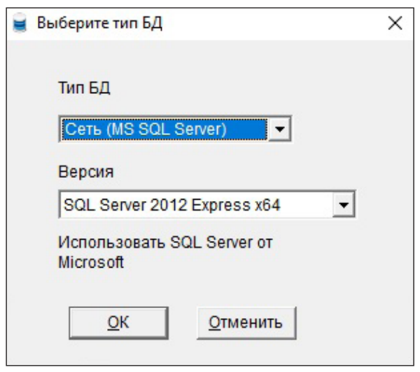
Выбор и создание базы данных Зайдите в Пуск верите Select Database Type (выберите тип БД). Для сетевой базы выберите Сеть (MS SQL Server) и тип SQL Server. Далее ОК (Рис. 23).
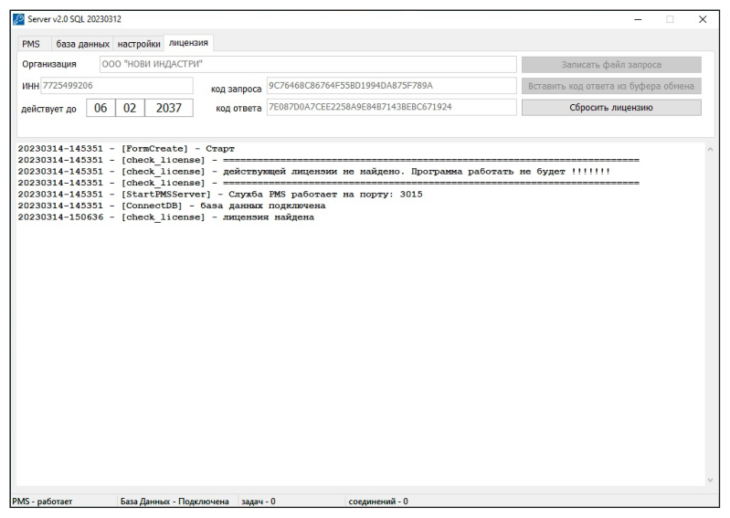
Получение лицензии и активация ПО Интегрции Откройте Server далее вкладка Лицензия. Заполните Реквизиты и укажите срок действия лицензии, затем нажмите кнопку Записать файл запроса, нужно будет указать имя файла (Пример: Hotel Mayak, ИНН, 01.01.2030) затем сохраняете файл (по умолчанию он сохранится в папку где установлен сервер C:\novilock\server). Для получения ключа активации нужно отправить запрос (файл) на почту License@novilock.ru. В ответном письме придет ключ для активации, его нужно скопировать и в сервере нажать Вставить код ответ из буфера обмена (Рис. 24).
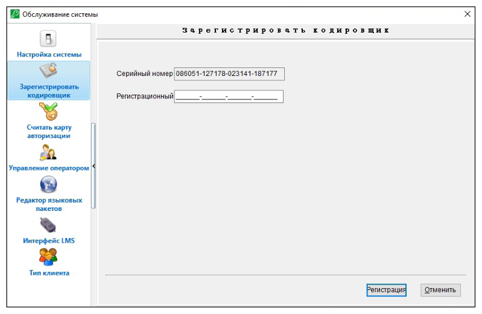
Регистрация программного обеспечения и авторизация Если после входа пользователя в систему высвечивается окно регистрации, необходимо выслать поставщику серийный номер программы, в соответствии с которым он предоставит вам регистрационный номер. В данной процедуре регистрируется конкретный энкодер, подключенный к программе. В дальнейшем энкодер можно свободно переносить на другой компьютер, регистрация больше не потребуется. Обратите внимание, что серийный номер действителен только в течении 24 часов. В общем случае энкодеры поставляются зарегистрированными, данная процедура не требуется (Рис. 25). Настройка системы – Aвторизация Перейдите в меню и выберите пункт Настройка системы, далее введите значения по умолчанию для параметров программы. Считайте карту авторизации на энкодере для сохранения ключа шифрования в программе.
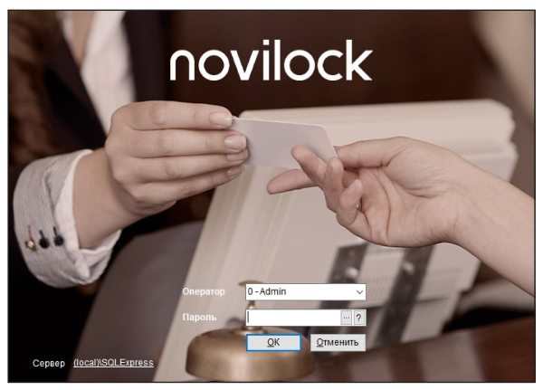
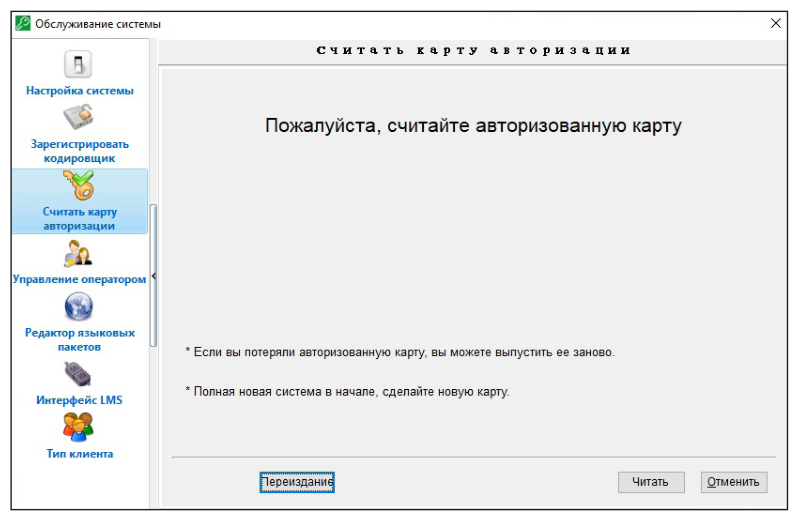
Вход в систему Пароль для пользователя системы по умолчанию не задан. Для подтверждения входа нажмите OK. Рекомендуется установить пароль на систему после входа (Рис. 26).
Настройка системы – Aвторизация Перейдите в меню Настройка системы и выберите пункт Считать карту авторизации, далее нажмите Читать. Считайте карту авторизации для сохранения ключа шифрования в программе. (Рис. 27).
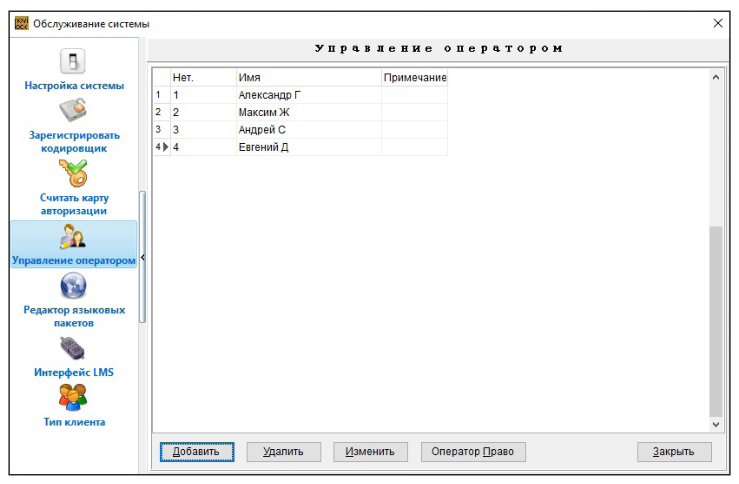
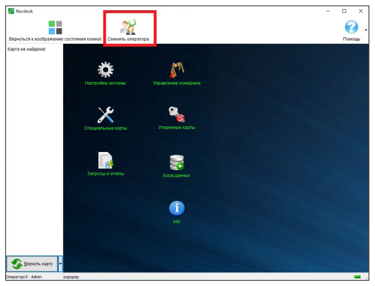
Управление персоналом Перейдите в меню Настройки системы далее Управление оператором, затем добавьте или удалите информацию o персонале, создайте пароль, нажмите Ок для сохранения информации. Затем выберите оператора и нажмите Оператор право укажите из списка, что может делать в ПО выбранный оператор. Повторите операцию для всего персонала. Сменит пароль может любой оператор с наделенными правами (Рис. 28).
Смена оператора Перейдите в меню Смена оператора, чтобы изменить текущего оператора. Выберите оператора из списка, укажите пароль и нажмите ОК (Рис. 29).